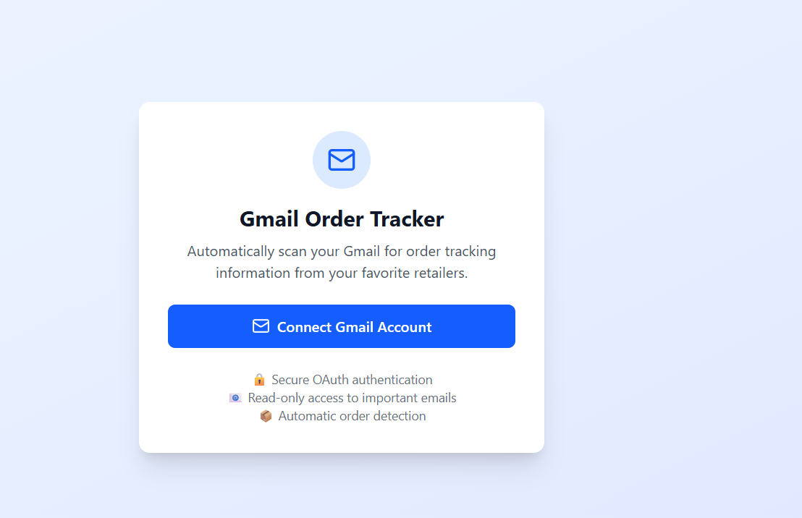
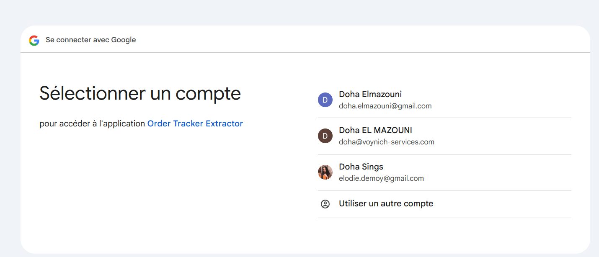
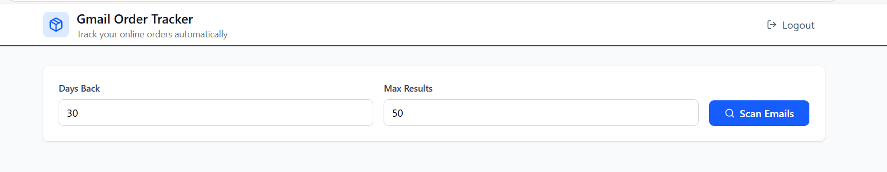
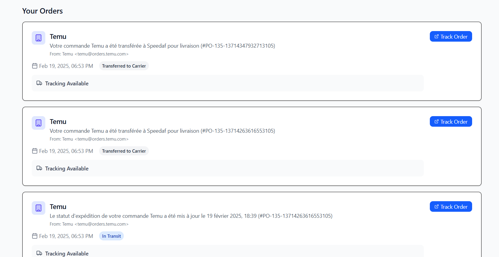

In the age of e-commerce, we buy more online than ever before. With convenience just a click away, consumers and businesses alike receive dozens of packages every month. Yet, despite all the tech powering online stores, the post-purchase experience — tracking and managing orders — remains surprisingly manual and inefficient.
This blog post explores how businesses and frequent online buyers can reclaim time and money by automating order tracking through smart tools like the Order Tracker Extractor.
The Problem: Email Overload and Manual Tracking
For every online purchase, a shipping confirmation email lands in your inbox. Multiply that by ten, twenty, or more orders per month, and you’ve got a cluttered email thread filled with tracking links, estimated delivery dates, and status updates — all in different formats, from different vendors, often in multiple languages.
The Real Business Impact:
Time Lost: On average, manually locating and checking tracking links takes 1–2 minutes per package. For someone managing 30 orders per month, that’s 30–60 minutes/month.
Error-Prone: Forgetting to check a shipment could lead to customer complaints, lost packages, or missed returns.
Scattered Data: Businesses can’t easily visualize delivery performance or shipping delays across carriers.
The Solution: Automated Order Tracking Extraction
Order Tracker Extractor is a simple tool with powerful impact. It automatically scans your email inbox for shipping confirmations, extracts tracking numbers and carrier names, identifies the current delivery status, and organizes everything in a clean dashboard.
How It Works :
Connect your email.  
Configure days back and email limit retrieval. 
The app finds and reads only relevant emails using trusted patterns. 
It detects the delivery status based on keywords and real shipping phrases (e.g., "en cours de livraison", "your package has shipped", or "transferred to Speedaf for delivery").
You get a centralized view of all orders — across vendors.
And finally , you log out.
Who Benefits Most?
E-commerce Resellers: Track orders from multiple vendors and ensure smooth delivery to customers.
Small Businesses: Centralize logistics oversight with minimal staff.
Busy Professionals: Never forget a shipment or return deadline.
Order Tracker Extractor doesn’t just save time — it gives insight. Imagine being able to:
Filter shipments by carrier.
See which vendors are consistently late.
Get alerts for out-for-delivery or delivery failures.
These are insights that help optimize vendor choice, improve customer experience, and boost operational efficiency. If you wouldn’t manually refresh your Instagram feed 30 times a day, why do it for package tracking?
Order Tracker Extractor helps you regain time, reduce frustration, and operate smarter — whether you’re a business or an individual buyer.
Small automations make a big difference — especially when they remove hidden friction from your daily workflow.